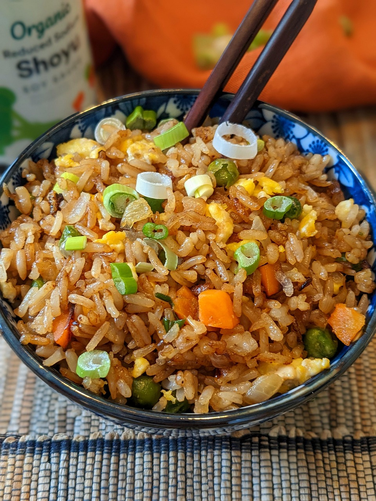

Amazing Spectacular Fried Rice!

Description
Yudi's Fried Rice is an excellent dish made best with spam, eggs, rice, tenderstem broccoli and onions. Try this authentic recipe if you want to be just like Yudi!
Ingredients
- Spam
- Eggs
- Garlic
- Onion
- Spring Onions
- Oyster sauce
- Soya sauce
- Day old rice
- laoganma
- Sesame oil
Steps
- First scramble your eggs and spam on medium heat until they both are a nice colour. Remove from pan when cooked.
- Add seasme oil on high heat, then add garlic, onions and spring onions so they sizzle
- Add tenderstem broccoli, oyster sauce and laoganma and cook until broccoli is done
- Add day old rice with oyster sauce, soya sauce and a sprinkle of salt
- Bring back spam and eggs and add to the mix
- Cook on low-medium heat until all the rice is mixed with the sauce
- Voila! You have fried rice!
Home